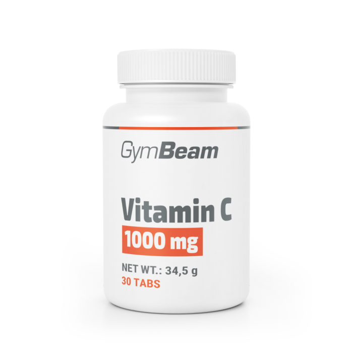

Vitamín C
Vitamín C je důležitý antioxidant pro imunitní systém. Pomáhá také při tvorbě kolagenu a ochraně buněk. Lidé ho často doplňují při únavě nebo v období nemocí. Najdeme ho v ovoci a zelenině, například v citrusách a paprikách. Doporučenou dávku je dobré nepřekračovat.
Nedostatek vitamínu C může vést k oslabené imunitě nebo únavě. Suplementace může pomoci doplnit jeho hladinu v těle. Příliš vysoké dávky však mohou způsobit zažívací potíže. Důležité je vybírat kvalitní výrobky. Správně užívaný vitamín C podporuje obranyschopnost a celkové zdraví.
